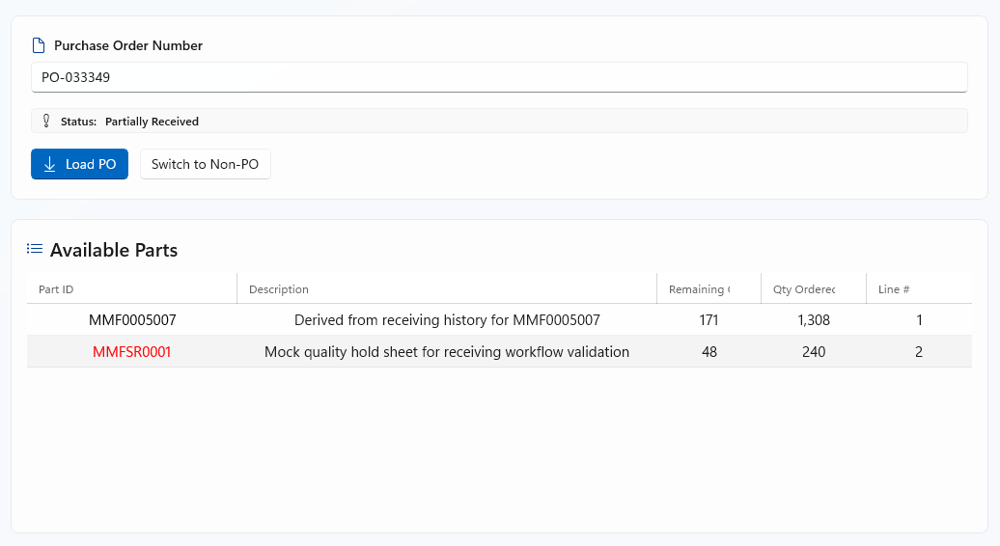
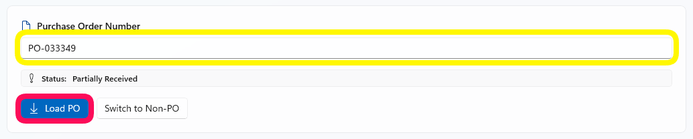
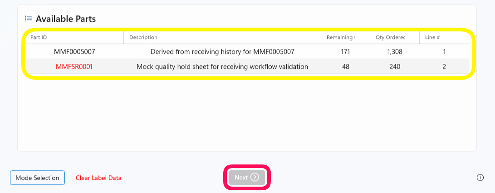
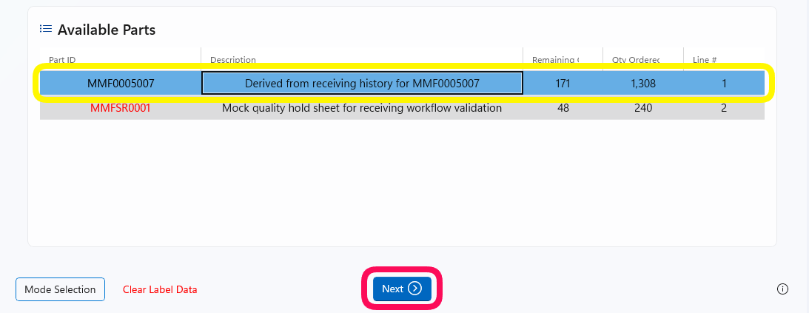
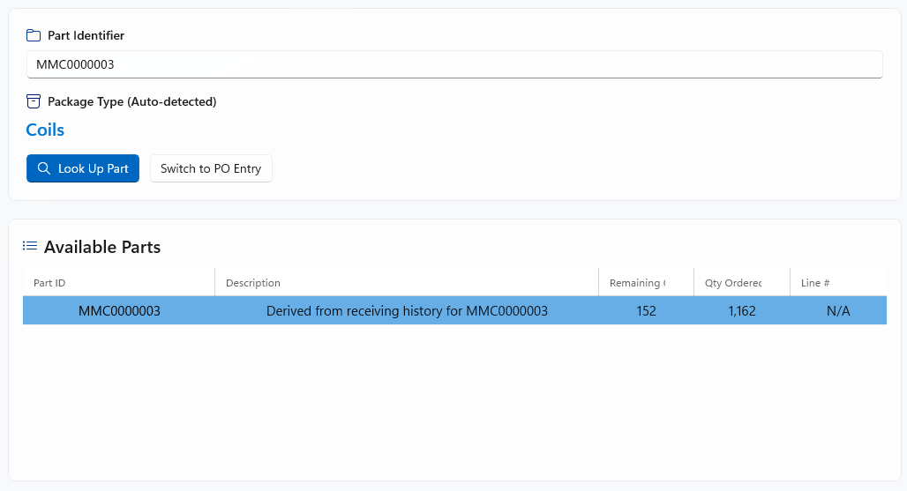
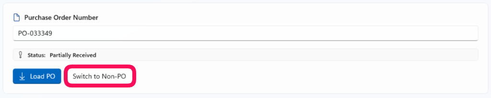
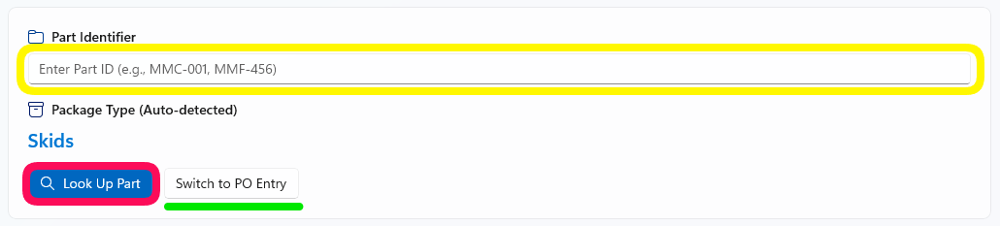
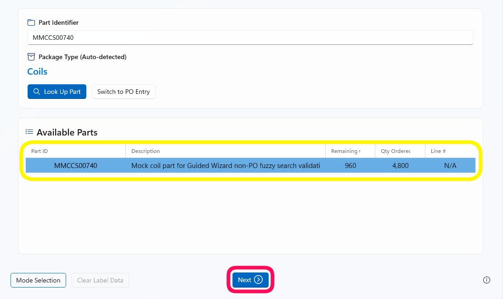
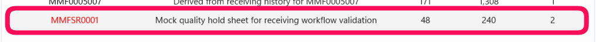
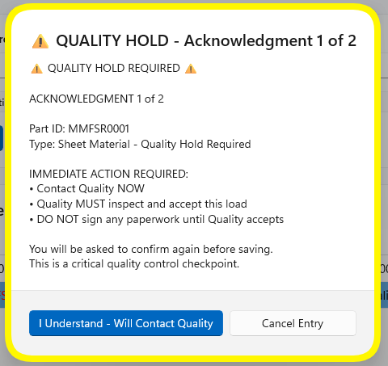

PO Entry — Guided Wizard
The first step of the Guided Wizard asks you to identify what you are receiving — either by entering a Purchase Order number or by looking up a part directly. This page covers both paths, the parts selection table, and what to do if you encounter a Quality Hold part.
Overview
The PO Entry screen is the first step of the Guided Wizard. It has two input modes that you can switch between freely:
PO Entry mode
Type a Purchase Order number, click Load PO, then pick the part from the list.
Non-PO mode
Type a Part ID, click Look Up Part, then pick the part from the list.
Both paths end at the same Available Parts table, where you click the correct row and then hit Next to continue.
{kind=link}

PO Entry screen — PO number loaded, Available Parts shown belowReceiving with a PO Number
Use this path when you have the Purchase Order number from your paperwork or the delivery documentation.
Enter the PO Number
Click the Purchase Order Number field and type the PO number
from your paperwork (for example, PO-033349).
The field is highlighted in yellow in the screenshot below.
{kind=link}

Type the PO number, then click the Load PO button (pink arrow)Click "Load PO"
Press Enter or click the blue Load PO button. A brief loading indicator appears while the app retrieves the PO from InforVisual. The Available Parts table then populates with every open line item on that PO.
{kind=link}

Available Parts table populated — select a row to enable the Next buttonSelect a part and click "Next"
Click the row in the Available Parts table that matches the part you are receiving. The row turns blue when selected. The Next button becomes active — click it to continue to the next wizard step.
{kind=link}

Row selected (blue) → Next button becomes active (pink circle)Receiving Without a PO (Non-PO)
If you are receiving material that does not have a Purchase Order — for example, a return shipment or a direct-issue part — use the Non-PO path. Click Switch to Non-PO at the top of the screen to switch modes.
{kind=link}

Click Switch to Non-PO (pink circle) to enter Non-PO modeEnter the Part ID
Type the Part ID (e.g. MMC-001 or MMF-456) into the
Part Identifier field.
The Package Type line below automatically updates
to show the detected package category (such as Skids, Coils,
Sheet Material, etc.) once you type a recognized part.
{kind=link}

Type the Part ID in the highlighted field, then click Look Up PartClick "Look Up Part"
Click the blue Look Up Part button (or press Enter). The app performs a search and populates the Available Parts table with matching results.
{kind=link}

A loading indicator (green bar) shows while the app searches InforVisualSelect the matching part and click "Next"
The matching part appears in the Available Parts table (highlighted yellow in the screenshot). Click the row to select it (it turns blue), then click Next.
{kind=link}

Part selected (blue) → click Next to continueTo switch back to PO mode, click Switch to PO Entry at any time before clicking Next.
Reading the Available Parts Table
Once a PO is loaded (or a Non-PO part is looked up), the Available Parts table shows the matching parts. Here is what each column means:
| Column | What it shows | Notes |
|---|---|---|
| Part ID | The unique identifier for the part as it appears in InforVisual | Shown in red if the part is on Quality Hold |
| Description | The part description from InforVisual | May be truncated for long descriptions |
| Remaining | Quantity still outstanding on the PO (ordered minus already received) | For Non-PO parts this reflects available stock |
| Qty Ordered | Original quantity ordered on the PO line | N/A for Non-PO items |
| Line # | The PO line number from InforVisual | Shows N/A for Non-PO items |
Selecting a row
Click anywhere on a row to select it. The selected row turns blue and the Next button in the bottom toolbar becomes active. You can only select one row at a time.
Quality Hold Parts
Some parts are flagged in InforVisual as requiring a Quality Hold. The app detects these automatically and requires two acknowledgments before you can proceed. This cannot be bypassed.
How to identify a Quality Hold part
Quality Hold parts appear in the Available Parts table with their Part ID shown in red text.
{kind=link}

The Quality Hold part (MMFSR0001) is displayed in red in the parts tableThe Quality Hold acknowledgment dialog
When you select a Quality Hold part and click Next, the app shows an acknowledgment dialog. There are two acknowledgments — you must confirm both before the wizard can continue.
{kind=link}

Read the entire dialog before clicking — it shows the Part ID, material type, and required actionsWhat each button does
| Button | What it does |
|---|---|
| I Understand — Will Contact Quality | Confirms you have read the notice and will contact the Quality team. Click this to advance to Acknowledgment 2 of 2. |
| Cancel Entry | Cancels the current selection and returns to the parts table so you can choose a different part or stop the transaction. |
Common Questions
I typed the PO number but the parts list is empty. What's wrong?
Check the following:
- Make sure you clicked Load PO after typing the number.
- Verify the PO number is correct — check for extra spaces or typos.
- The PO Status may show Closed, meaning all lines have been fully received and no open lines remain.
- If the status shows an error, contact your supervisor or IT support.
The "Next" button is greyed out even though I selected a row.
There are two parts on the PO — how do I know which one to pick?
I accidentally selected the wrong part. How do I clear it?
What does "Partially Received" mean in the PO Status?
The Part ID field shows "Package Type: Skids" — can I change this?
Can I switch from Non-PO back to PO Entry?
A dialog appeared saying "No exact part match was found". What do I do?
That is the Smart Part Search dialog. It opens automatically when you type a Part ID that isn't an exact match in InforVisual. The app found similar parts and is asking you to pick the right one.
Click the row that matches the part label on the physical delivery, then click Select. If none of the suggestions look correct, click Cancel and double-check the Part ID from the label. See Smart Part Search for a complete walkthrough.